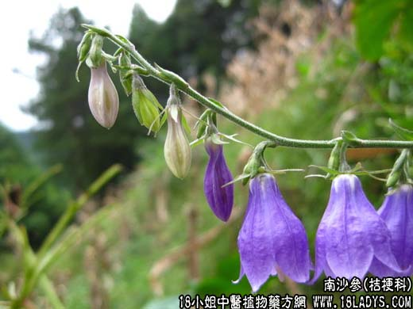

【中药概述】
南沙参为桔梗科植物轮叶沙参及同属的多种植物的根（南沙参）。甘、微寒。归肺、胃经。
1．润肺养胃：用于肺阴虚较轻，而燥热咳嗽，虚劳久咳，痰粘不易咯出等，有养肺阴、清肺热和祛痰之效。
2．清热养阴：用于热病后气液不足或脾胃虚弱之证。如（<温病条辨>沙参麦冬汤）。
【药效鉴别】
清宣肺气，清肺火，治肺有虚热咳嗽，或久咳肺痿，咯痰不爽，而“偏实证”。兼有风热感冒而肺燥热者。
【药理作用】
1．对免疫功能的影响。腹腔注射杏叶沙参煎液（0.5g／只）能明显增高小鼠末梢血中淋巴细胞和T细胞数；胸腺内淋巴细胞数和T细胞数亦有增加趋势，可显著提高小鼠腹腔巨噬细胞吞噬百分
率；可明显增加小鼠脾脏重量，但降低小鼠脾脏淋巴细胞数和T细胞数。表明沙参可提高机体细胞免疫和非特异性免疫，抑制体液免疫。具有调节免疫平衡的功能。沙参也可提高淋巴细胞转换率。
2．祛痰作用。按lg／kg剂量给家兔灌服沙参煎剂表明具有一定的祛痰作用，其作用可持续4小时以上，但作用强度不及紫苑等。
3．抗真菌作用。沙参水浸剂（1：2）在试管内对奥盎小芽胞癣菌、羊毛样小芽胞癣菌等皮肤真菌有不同程度的抑制作用。
4．强心作用。1％沙参浸剂对离体瞻蛛心脏具有明显强心作用，离体心脏振幅增大，作用可持续5分钟。
【应用与配伍】
用于阴虚久咳，劳嗽痰血。燥咳痰少。沙参体质轻清，气味俱薄，善入上焦而养肺阴，清肺热，润肺燥，且具化痰之功，故阴虚夹痰的咳嗽尤为常用品。治阴虚久咳，痰少而粘者，本品配生地、麦冬、贝母等以养阴清热，润肺化痰；若肺热较盛，再加清肺之桑白皮、地骨皮；久嗽不已，再配止咳化痰之款冬花、炙百部；久咳声哑，再伍清热养阴。敛肺利咽之玄参、诃子。治肺癌咳嗽，痰中带血，可配阿胶、百部、川贝等以滋阴保肺，止血化痰，如《医学心悟》之月华九。治燥邪伤肺、干咳无痰，常与桑叶、杏仁等清宣燥热药同用，如《温病条辨》之桑杏汤；若燥伤肺胃、津液亏损，干咳烦热，口鼻干燥，则配用麦冬、天花粉等甘寒之品以清养肺胃，如《温病条辨》之沙参麦冬汤。至于阴虚喉痹，咽干疼痛，本品配百合、桔梗、射干可养阴润肺。清热利咽。 用于热病伤津及杂病胃阴虚的口干咽燥，舌红少苔。本品甘润，有养阴益胃生津作用，常用沙参与生地、玉竹等甘寒养阴生津之品同用，如《温病条辨》之益胃汤；若津伤较重，舌绛少津，可以鲜沙参与鲜生地、鲜石斛等同用，以增养阴生津之效。《得配本草》：“得糯米，助脾阴；配生地，凉血热；佐柴、葛，去邪火，合玄参，止干嗽。”
【化学成分】
沙参含皂甙、香豆素、胡萝卜甙、蒲公英萜酮、二十八烷酸和β-谷甾醇。轮叶沙参根含三萜皂甙、蒲公英萜酮、胡萝卜甙、β-谷甾醇和饱和脂肪酸。南沙参中均含多糖、羽扇豆烯酮。
【用量用法】
10——15g，水煎服。
【使用注意】
本品反藜芦。不良反应见，接触性皮炎，结膜炎，鼻炎。
1．《本草经集注》：“恶防己，反藜芦。”
2．《本草经疏》：“脏腑无实热，肺虚寒客之作嗽者，勿服。”
【注】
南沙参形较粗大，顶端具1或2个根茎（芦头）。表面黄白色或淡棕黄色，上部多有深陷横纹，呈断续的环纹。体轻质泡。断面黄白色，根心空似丝瓜络。
全国各地作沙参入药者还有桔梗科植物阔叶沙参、山沙参、长柱沙参、柳叶沙参、齿叶沙参、西南沙参等，作用同杏叶沙参。